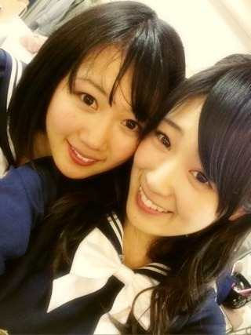
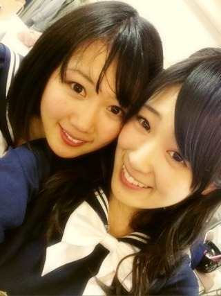

2013/0222Fri（´-`）.｡oO(かずみん×143
2月22日、みなさんのおかげで
乃木坂46がデビュー1周年を
迎えました。
デビュー曲の
ぐるぐるカーテンは
もう1年も前に発売されたのですね。
そう考えると早いなぁ...
この1年間で髪型とか骨格とか
ポジションとか、
色々変わってしまったけれど、
確かな成長もしました。
みなさんの応援のおかげです。
本当にありがとう(T_T)
いつもは何日もかけて
じっくりとブログを書くのですが、
今日はnowに書いてます。笑
リハ等々で書いている暇が
なかったのです。忙しや〜
でもその分楽しいライブに
なりました！！
来てくれたみなさん、
ありがとうでした(o^^o)
どうでしたか( ´ ▽ ` )？
実は朝まで気管支炎が治らず、
体調優れない状態でした。
悔しかった。
でも点滴をして、気合で乗り切る
ことができました(T_T)
無事に終わってよかったです。
精一杯頑張れました。
残念ながら来れなかった方
みなさんからの応援、届いてました！
ありがとうございました！
気合を入れるために猫耳ヘアを...笑

今日は本当に大切な日。
去年、デビュー日が2月22日と
決まってすぐ(1月くらい？)
に1度こう書きました。
父と母もライブに
来てくれました。
弟も天国で見てくれてたと思います。
毎年素敵な歌をプレゼントしたいですね
2月22日は。
素晴らしい1日をありがとう...
乃木坂に入れて本当によかった(^^)
2年目もガジ頑張るぞ！

おやすみなさい...☆
乃木坂46がデビュー1周年を
迎えました。
デビュー曲の
ぐるぐるカーテンは
もう1年も前に発売されたのですね。
そう考えると早いなぁ...
この1年間で髪型とか骨格とか
ポジションとか、
色々変わってしまったけれど、
確かな成長もしました。
みなさんの応援のおかげです。
本当にありがとう(T_T)
いつもは何日もかけて
じっくりとブログを書くのですが、
今日はnowに書いてます。笑
リハ等々で書いている暇が
なかったのです。忙しや〜
でもその分楽しいライブに
なりました！！
来てくれたみなさん、
ありがとうでした(o^^o)
どうでしたか( ´ ▽ ` )？
実は朝まで気管支炎が治らず、
体調優れない状態でした。
悔しかった。
でも点滴をして、気合で乗り切る
ことができました(T_T)
無事に終わってよかったです。
精一杯頑張れました。
残念ながら来れなかった方
みなさんからの応援、届いてました！
ありがとうございました！
気合を入れるために猫耳ヘアを...笑
今日は本当に大切な日。
去年、デビュー日が2月22日と
決まってすぐ(1月くらい？)
に1度こう書きました。
父と母もライブに
来てくれました。
弟も天国で見てくれてたと思います。
毎年素敵な歌をプレゼントしたいですね
2月22日は。
素晴らしい1日をありがとう...
乃木坂に入れて本当によかった(^^)
2年目もガジ頑張るぞ！

おやすみなさい...☆
2013/02/22 23:36
コメント(645)
お疲れ様でしたっ
ヽ(・∀・)ノ
お疲れ様でした。
めっちゃ楽しかった(・ω・)ノ
ほんとに素晴らしいライブだった！
感動で泣いたよー！
A席の端っこだったからハイタッチできました！
今日は本当に幸せな一日になりました＼(^o^)／
感動で泣いたよー！
A席の端っこだったからハイタッチできました！
今日は本当に幸せな一日になりました＼(^o^)／
かずみーん!
ライブ最高だったよ!!
お疲れ様(*´∇｀*)
これからもよろしくね!
ライブ最高だったよ!!
お疲れ様(*´∇｀*)
これからもよろしくね!
中田推しのくるりんごですm(_ _)m
とても素敵なライブでした。
きっと届いていると思いますよ。
とても素敵なライブでした。
きっと届いていると思いますよ。
かずみんヤッホー(o・・o)/
やまちゃんとめっちゃ沸いた
結構頑張ったけど気付いたかなあ？
とにかくお疲れ様～！
めっちゃ楽しかった
しっかり休んで下さい
２年目もガジ頑張ー！
ほなねﾉｼ
やまちゃんとめっちゃ沸いた
結構頑張ったけど気付いたかなあ？
とにかくお疲れ様～！
めっちゃ楽しかった
しっかり休んで下さい
２年目もガジ頑張ー！
ほなねﾉｼ
かずみん今日最高だったよーー！
おれのメッセージ見れた？( ꒪Д꒪)
＼1周年オメイジーング／
こーやだーぜぜぜぜぜーい！
これ握手会行ったらやるから覚えておいて！笑
あと弟さん誕生日＼オメイジーング／
ちゃんとかずみんの活躍見て喜んでるよ！
だからおれがオメイジーングて言ってたって伝えておいてね！
かずみんの大切な日ってことはおれの大切な日ってことや*\(^o^)/*
じゃ今日はおつかれ*\(^o^)/*
おやすみだーぜぜぜぜぜーい！
おれのメッセージ見れた？( ꒪Д꒪)
＼1周年オメイジーング／
こーやだーぜぜぜぜぜーい！
これ握手会行ったらやるから覚えておいて！笑
あと弟さん誕生日＼オメイジーング／
ちゃんとかずみんの活躍見て喜んでるよ！
だからおれがオメイジーングて言ってたって伝えておいてね！
かずみんの大切な日ってことはおれの大切な日ってことや*\(^o^)/*
じゃ今日はおつかれ*\(^o^)/*
おやすみだーぜぜぜぜぜーい！
かずみん大変だったんだね(>_<)
お疲れさま、そしておめでとう♪
楽しいライブだったよ！
お疲れさま、そしておめでとう♪
楽しいライブだったよ！
楽しかったよー
体調悪いなか、よくやってたね。というか、悪そうに感じさせないパフォーマンスだったよ
猫耳ヘアだったのか…。一瞬、中森明菜風にしたのかと思った
体調悪いなか、よくやってたね。というか、悪そうに感じさせないパフォーマンスだったよ
猫耳ヘアだったのか…。一瞬、中森明菜風にしたのかと思った
楽しかったぜぜぜぜーぜ！
ますます乃木坂46が好きになりました！
ますます乃木坂46が好きになりました！
ライブお疲れ様です！
行けなかったから、ずっと気になってましたよー
2年目もよろしくです！！
行けなかったから、ずっと気になってましたよー
2年目もよろしくです！！
今日ライブ行けなかったけど、どうやら成功したみたいだね(*^.^*)
お疲れ様!!
今日はゆっくり休んで二年目も乃木坂らしく頑張ってね！
では、おやすみ！
お疲れ様!!
今日はゆっくり休んで二年目も乃木坂らしく頑張ってね！
では、おやすみ！
ライブお疲れ様です！
行けなかったから、ずっと気になってましたよー
2年目もよろしくです！！
行けなかったから、ずっと気になってましたよー
2年目もよろしくです！！
おつかれー!!
ライブ良かったよー♪
良いもの見せてもらったわー♪
やまちゃんときらちゃんと沸いてたw
ゆっくり休んでねー
おやすみー☆
ライブ良かったよー♪
良いもの見せてもらったわー♪
やまちゃんときらちゃんと沸いてたw
ゆっくり休んでねー
おやすみー☆
birthday liveお疲れ様！
。
。゜ ★ :-*♪:-*
。゜ ★ :-*♪:-*
¶n_n_￣|..∧_∧:-*♪:-*
.(￣￣￣|ロ|.(๑ت๑*):-*
.[[＝＝＝|_|=[U★U]
∠oooo=oo=oooo┘ ⊃⊃
〓〓乃〓〓木〓〓坂〓〓46〓〓
こんばんは(๑ت๑)
こうたん★ですっ(≧∀≦)
今日はライブお疲れ様！(๑･ิω･ิ๑)
僕は行けなかったけど、友達とかが演出めっちゃ良かったとかめっちゃ楽しかったって言ってたよ！
大成功ですねっ★(๑ت๑)
僕はDVD待ちですね(笑)
改めて、、
... ＊~iiii~＊
. ∴┍★*☆┑∴
..∵┍*HAPPY*┑∵
.┍♡BIRTHDAY♡┑
.┖☆:~~~--~~:☆┚
乃木坂46おめでとう！！
乃木坂46というグループを知って初めて聴いた曲は、、ぐるぐるカーテンと思いきや、
左胸の勇気でした！
初めて聴いた左胸の勇気は、めっちゃ感動してしまってとりこになってしまいました！
初めて乃木坂46を知ったのは、公式ライバル誕生ときいてからで気になるくらいだったのに、いつの間にか虜になってたんよ～(≧∀≦)
曲の歌詞とかだったら、左胸の勇気とか乃木坂の詩がめっちゃ印象的でした！！
いつでも 前向きに 前向きに
やってるうちに ついてくる ついて
くる 逃げ出さなければ
がむしゃらが 道を切り開くんだ！
の左胸の勇気のここの歌詞がめっちゃ好きですっ★(≧∀≦)★)
乃木どこが始まって、初めて見たのは
第３回目くらいだったかなっ★
そこからずっとみてて
コントとかエピソードトークとかキャンプ合宿とかめっちゃ楽しませてもらえました(≧∀≦):-*:-*
一年という時間がスッゴく短く感じたし、、
乃木坂46に出会えてほんと感謝しよるんやけんねっ★
乃木坂のメンバーやスタッフさんとかにめっちゃ感謝しなきゃいけないなぁ～(≧∀≦)★
今年は、、2期生とか入ってきて大幅に変わるかもしれないけど、
今のペースで自分を信じたら道は切り開くんだよね(笑)
歌詞でもあったから…★
これからもずっと応援しよるけんねっ★
いつでも前向きに、無理はせず頑張ってなっ(*^_^*):-*
改めてやけど、、ほんとライブお疲れ様ですっ★(≧∀≦)★
明日も頑張ろ～♪
１日マイペース♪
１日楽しく過ごせますように…★
そして、これからも
乃木坂46が素晴らしいグループのまま飛躍していきますように…★
こうたん★(๑ت๑)
流石に愛してる
今日おれも体調悪すぎて行きたかったのにいけなかった( ；´Д｀)
ガチ萎えたぁ( ；´Д｀)
でも、友達からいろいろ聞いてめちゃ楽しそうだったからよかった(^ ^)
これからもポジティヴ精神でがんばっていきまっしょい！！！
ごいせぇ。
ガチ萎えたぁ( ；´Д｀)
でも、友達からいろいろ聞いてめちゃ楽しそうだったからよかった(^ ^)
これからもポジティヴ精神でがんばっていきまっしょい！！！
ごいせぇ。
かずみん
昨日は素晴らしかった
どこをとっても
かずみんは
パーフェクト
さすが俺推し！
今日は
ゆっくり休んで
夕方くらいまで寝るんだよ
お疲れ様
感動をありがとう！
楽しかったよ
でわ
ポジティブかずみん
昨日は素晴らしかった
どこをとっても
かずみんは
パーフェクト
さすが俺推し！
今日は
ゆっくり休んで
夕方くらいまで寝るんだよ
お疲れ様
感動をありがとう！
楽しかったよ
でわ
ポジティブかずみん
ライブ行ったよー！
B4ブロック46番にいたよ！
めっちゃ楽しかった（≧∇≦）
めっちゃ叫んだけど届いたかな？w
次の握手会とかライブとかいろいろイベント行くからね^_−☆
次もめっちゃたのしみー\(//∇//)\
B4ブロック46番にいたよ！
めっちゃ楽しかった（≧∇≦）
めっちゃ叫んだけど届いたかな？w
次の握手会とかライブとかいろいろイベント行くからね^_−☆
次もめっちゃたのしみー\(//∇//)\
今日は最高の時間だった！
てかボールちゃんとこっち目掛けて投げてー！
３回くらいべびたんと一緒に投げてくれてたけど届いてこなくて隣の一実さん推しの奴と盛り上がってたよ。笑
次またお願いします！笑
お疲れ様！！
お疲れ様です(・o・)
しゃべり方も変わりましたよ-w
気管支炎って重症だったんでやんすな(*´д｀*)(*⌒▽⌒*)いやはや逞しい事でやんすな
にしても一年ももう経っちゃうですなも～～(〃⌒ー⌒〃)∫゛(；´д⊂)
そーきゃあ親御さんもこられるんですな。なんかまだまだ若いですからね～
必要な事ですなも～～。リアルタイムなのもよかごわんどー～((((゜д゜;))))(~▽~＠)♪♪♪
にしても一年ももう経っちゃうですなも～～(〃⌒ー⌒〃)∫゛(；´д⊂)
そーきゃあ親御さんもこられるんですな。なんかまだまだ若いですからね～
必要な事ですなも～～。リアルタイムなのもよかごわんどー～((((゜д゜;))))(~▽~＠)♪♪♪
お疲れ様（＾_＾）
ナイスファイト、
かずみんたち乃木坂の努力や頑張りは
俺たちが計り知れないくらいってことはしってるよ
ほんとにすごいと思う！
いつも元気もらってるしありがたいね^ - ^
ちやんと体休めて体調くずさないようにね！
ナイスファイト、
かずみんたち乃木坂の努力や頑張りは
俺たちが計り知れないくらいってことはしってるよ
ほんとにすごいと思う！
いつも元気もらってるしありがたいね^ - ^
ちやんと体休めて体調くずさないようにね！
かずみーん＼(^O^)／
今日はめちゃくちゃ楽しかったよ！！！！
今まで生きてきて最高の一時でした！！
本当に乃木坂に出会えて良かった！
今日という日を本当にありがとう！
乃木坂サイコー＼(^O^)／
今日はめちゃくちゃ楽しかったよ！！！！
今まで生きてきて最高の一時でした！！
本当に乃木坂に出会えて良かった！
今日という日を本当にありがとう！
乃木坂サイコー＼(^O^)／
一実さん。感動しました。
みんな輝いてたよ。
最初の幕が落ちて
ぐるカーが始まった瞬間
鳥肌立って一番うるった←
やっぱ乃木坂46ってすごい。
乃木坂応援してきて良かった！
これからも成長を続けていく
乃木坂を楽しみにしてるね～！
ではね♪
14ひかるん←
かずみんライブお疲れ様！
気管支炎大丈夫？無理せえへんようにしてね！
乃木坂大好き(*´ω｀*)♡
かずみん、ライブお疲れさまー。
途中、苦しそうな一面もあったけど、歌に影響なくて良かった。かずみんは納得してないかもだけど（笑）
最高に楽しかった*\(^o^)/*
こんなに沢山の人とアメイジングできるとは‼
いろんな人がかずみんの歌が良かったとブログなどで感想を書いているのをみて安心しました。
かずみんにとってとても大切な日。
ライブでの歌声、かずみんへのコール、拍手が全て天国まで届きそうな気がしたそんな素晴らしいライブでした。
かずみんが感極まって泣いたら…って少し心配してたけど、最後まで笑っていてくれて嬉しかったです。
毎度のことですが、
かずみん、いつもありがとう！
いつも心にかずみんを*\(^o^)/*
本当にお疲れさまー
途中、苦しそうな一面もあったけど、歌に影響なくて良かった。かずみんは納得してないかもだけど（笑）
最高に楽しかった*\(^o^)/*
こんなに沢山の人とアメイジングできるとは‼
いろんな人がかずみんの歌が良かったとブログなどで感想を書いているのをみて安心しました。
かずみんにとってとても大切な日。
ライブでの歌声、かずみんへのコール、拍手が全て天国まで届きそうな気がしたそんな素晴らしいライブでした。
かずみんが感極まって泣いたら…って少し心配してたけど、最後まで笑っていてくれて嬉しかったです。
毎度のことですが、
かずみん、いつもありがとう！
いつも心にかずみんを*\(^o^)/*
本当にお疲れさまー
かずみーん！こんばんは！
乃木坂46バースデーライブ参戦したよ(^-^)
もうね、本当に最高だった。
いろいろ伝えたいからまたあとで
ゆっくりコメントするね(((o(*ﾟ▽ﾟ*)o)))
乃木坂46バースデーライブ参戦したよ(^-^)
もうね、本当に最高だった。
いろいろ伝えたいからまたあとで
ゆっくりコメントするね(((o(*ﾟ▽ﾟ*)o)))
>この1年間で髪型とか骨格とか ポジションとか
え？骨格！！(゜ロ゜ノ)ノ
そりゃ凄いハズです。
いやとにかく燃えに萌えたライブでした！
こっちも２時くらいに帰りつきましたが、まだ興奮冷めやらぬって感じ。
真っ白に燃え尽きようが乃木坂を応援していきまっせ！
え？骨格！！(゜ロ゜ノ)ノ
そりゃ凄いハズです。
いやとにかく燃えに萌えたライブでした！
こっちも２時くらいに帰りつきましたが、まだ興奮冷めやらぬって感じ。
真っ白に燃え尽きようが乃木坂を応援していきまっせ！
もう最高だった！
めっちゃ楽しかった！
こんばんは♪
猫耳ヘアーメッチャクチャ可愛かったです！
ホントに今日のライブサイコーでした！
明日も頑張ってください(^-^)/
では、お休みなさい(-.-)Zzz・・・・
デビュー1周年おめでとう
この1年で変わったのが髪型の次に
骨格がくるんやー(笑)
( ･ิω･ิ)にゃーにゃーにゃー
おめでとー☆★ ♡ʕ(๑◕‿◕๑)ʔ♡
残念ながら仕事でライブには行けなかったけど遠くから祝ってましたよ！！
ってか、かずみん！一枚目の写真が…！！！
残念ながら仕事でライブには行けなかったけど遠くから祝ってましたよ！！
ってか、かずみん！一枚目の写真が…！！！
かずみさん一周年おめでとうー。
お疲れさまでした。
無理しないで。
心配だわ。
ライブ仕事だから行けなかったけど、
俺は俺で今やるべき事をやってきた。
かずみさんも一生懸命やった。
頑張ったね。
お疲れさまでした。
無理しないで。
心配だわ。
ライブ仕事だから行けなかったけど、
俺は俺で今やるべき事をやってきた。
かずみさんも一生懸命やった。
頑張ったね。
かずみんにゃー
今日の髪型マジに可愛いかったDETH(*＾▽＾)ノ
でも場所悪すぎてほとんどモニター見てたｗｗ
オシカレでーす
楽しかったです
バイにゃー
今日の髪型マジに可愛いかったDETH(*＾▽＾)ノ
でも場所悪すぎてほとんどモニター見てたｗｗ
オシカレでーす
楽しかったです
バイにゃー
Birthday Liveおつかれ坂でした！
(･ω･ゞ
仕事の都合でbicycleからの観覧でしたが、
とても楽しませて貰いました！
偶然も聴きたかったなぁ(･∀･)
最後の挨拶も楽しく盛り上がれましたが、
次のあしゅりんが困ってましたよーヽ(^o^)
ほんにあなたの話力は凄い(^_-)-☆
乃木坂46になくてはならない存在になりましたね！
アメージングヽ(^o^)ノ
２年目もガジ頑張ってくださゆにゃん←
また来まぁしゅ(･ω･ゞ
(･ω･ゞ
仕事の都合でbicycleからの観覧でしたが、
とても楽しませて貰いました！
偶然も聴きたかったなぁ(･∀･)
最後の挨拶も楽しく盛り上がれましたが、
次のあしゅりんが困ってましたよーヽ(^o^)
ほんにあなたの話力は凄い(^_-)-☆
乃木坂46になくてはならない存在になりましたね！
アメージングヽ(^o^)ノ
２年目もガジ頑張ってくださゆにゃん←
また来まぁしゅ(･ω･ゞ
今日は、ライブ楽しかったよー
ありがとっ＆おつかれちゃん
おやすみ＊*
ありがとっ＆おつかれちゃん
おやすみ＊*
♪♪かずみん♪♪
こんばんは=^・^=
今日は素敵なステージができたみたいですね！
良かった(*^^*)
気管支炎だったんだ(>_<)
今日はゆっくり休んでください(^^ゞ
かずみさん♪
きっと弟さんも喜んでたと思います。
素敵なステージができて、ホントに良かった(*^^*)
アメイジング＼(^o^)／
またね(*・ｘ・)ノ~~~♪
こんばんは=^・^=
今日は素敵なステージができたみたいですね！
良かった(*^^*)
気管支炎だったんだ(>_<)
今日はゆっくり休んでください(^^ゞ
かずみさん♪
きっと弟さんも喜んでたと思います。
素敵なステージができて、ホントに良かった(*^^*)
アメイジング＼(^o^)／
またね(*・ｘ・)ノ~~~♪
(^-^)vシャンプーです！
一周年ライブ本当にありがとう～(^o^)/
本当に本当にご苦労様でした！笑顔のうらに努力あり！なんだね!!一年間積み上げて来たものを大切に！
これからもっと高く積み上げて行くために大きくなって下さい。
一周年ライブ本当にありがとう～(^o^)/
本当に本当にご苦労様でした！笑顔のうらに努力あり！なんだね!!一年間積み上げて来たものを大切に！
これからもっと高く積み上げて行くために大きくなって下さい。
お疲れさま！！
ライブは行けんかったけど楽しそうで良かったね！
ゆっくり休んでまた頑張って♪
ライブは行けんかったけど楽しそうで良かったね！
ゆっくり休んでまた頑張って♪
かずみんライブお疲れ様♪
ライブいったよー♪
初乃木坂ライブで
しかも1周年birthday live
もう本当に楽しかったよ～(^_^)/
乃木坂46に出会えて本当によかったと
改めて実感した(//∇//)
そしてこれからも応援していくけん。
2年目も坂を登って行こう(^_^)v
ライブいったよー♪
初乃木坂ライブで
しかも1周年birthday live
もう本当に楽しかったよ～(^_^)/
乃木坂46に出会えて本当によかったと
改めて実感した(//∇//)
そしてこれからも応援していくけん。
2年目も坂を登って行こう(^_^)v
今晩わ！
とりあえずライブお疲れ様です！
行けなかったけどすんごい応援してましたよ(^○^)
あと、弟さんのお誕生日おめでとうございます!！！
素晴らしい姉を持てて弟さんは幸せ者ですね♪
早く体調良くなってほしいです！
応援してますから!！！
とりあえずライブお疲れ様です！
行けなかったけどすんごい応援してましたよ(^○^)
あと、弟さんのお誕生日おめでとうございます!！！
素晴らしい姉を持てて弟さんは幸せ者ですね♪
早く体調良くなってほしいです！
応援してますから!！！
デビュー1周年おめでとう！
AMAZING ANNIVERSARY＼(^o^)／
かずみんにとって2月22日は本当に本当に
大切な日になったね
今回は残念ながら行けなかったけど、次のLIVEは絶対行くからねー！
ゆっくり休んで体調整えて、また笑顔と感動を届けてください
おつかれさま～(*・∀・)/
AMAZING ANNIVERSARY＼(^o^)／
かずみんにとって2月22日は本当に本当に
大切な日になったね
今回は残念ながら行けなかったけど、次のLIVEは絶対行くからねー！
ゆっくり休んで体調整えて、また笑顔と感動を届けてください
おつかれさま～(*・∀・)/
LIVEお疲れ様～
今日の髪型可愛いかったよ
(#^_^#)
踊ってるかずみんカッコ良かった
両親も頑張ってるかずみんを見て安心したんじゃない？
もちろん、弟君もそう思ってると思うよ
こんなに弟のこと想ってくれる姉が居るなんて、弟君も幸せ者だね
これからも家族を大切に、特に自分を大切して
本当に無理だけはしないでね
(*_*)
ゆっくり、時には急ぐこともあるだろうけど、かずみんのペースで
元気なかずみんを見れるだけで、俺は元気貰ってるしね(^_-)-☆
今日という日を忘れずに、また一歩、二歩って今年も頂上目指して登って行こう
(^_^)/
今日は本当に
アメイジング＼(^_^)／
今日の髪型可愛いかったよ
(#^_^#)
踊ってるかずみんカッコ良かった
両親も頑張ってるかずみんを見て安心したんじゃない？
もちろん、弟君もそう思ってると思うよ
こんなに弟のこと想ってくれる姉が居るなんて、弟君も幸せ者だね
これからも家族を大切に、特に自分を大切して
本当に無理だけはしないでね
(*_*)
ゆっくり、時には急ぐこともあるだろうけど、かずみんのペースで
元気なかずみんを見れるだけで、俺は元気貰ってるしね(^_-)-☆
今日という日を忘れずに、また一歩、二歩って今年も頂上目指して登って行こう
(^_^)/
今日は本当に
アメイジング＼(^_^)／
かずみんの歌声大好き、
ゆう。です。
デビュー1周年
おめでとう！
いつも、全握や、いろんなライブが終わると
「今まで生きてきた中で、
１番幸せ…」
と言う気持ちになる…、
かずみん、
この前の横浜の握手会の時も、
体調が万全ではない中、
握手会をがんばっていたと思います、
今日も、何回か
咳が出ていましたね、
今日のこの日、
かずみん、悔しいと書いていましたが、
かずみんのがんばりで
また今日
「今まで生きてきた中で、
１番幸せ…」
の気持ちが塗り替えられました、
それほど、
素晴らしいライブでした、
感動した、話したい、書きたいことが、
山ほどあって、
一言では言い表せないです、
久しぶりに
喉が枯れるくらい、
応援の声を出して、
楽しかった！
デビューから1年経って、
かずみんと一緒に坂を登っている気持ちを
あらためて感じて、
幸せな気持ちになっています、
やっぱり、
普段、幸せをいただいている分の恩返しを、
応援で少しでも返せたら…
って思っていたけれど、
かずみんや
乃木坂メンバーみんなに、
それ以上の幸せを、
また、いただいちゃいました、
どう感謝の気持ちを書いたらよいかわからないですが、
本当に本当に
ありがとう！
乃木坂46がある時代、
かずみんが
乃木坂46にいる時代、
そんな今の時代に、
生まれ、生きていることが、
本当に、幸せです。
ゆう。です。
デビュー1周年
おめでとう！
いつも、全握や、いろんなライブが終わると
「今まで生きてきた中で、
１番幸せ…」
と言う気持ちになる…、
かずみん、
この前の横浜の握手会の時も、
体調が万全ではない中、
握手会をがんばっていたと思います、
今日も、何回か
咳が出ていましたね、
今日のこの日、
かずみん、悔しいと書いていましたが、
かずみんのがんばりで
また今日
「今まで生きてきた中で、
１番幸せ…」
の気持ちが塗り替えられました、
それほど、
素晴らしいライブでした、
感動した、話したい、書きたいことが、
山ほどあって、
一言では言い表せないです、
久しぶりに
喉が枯れるくらい、
応援の声を出して、
楽しかった！
デビューから1年経って、
かずみんと一緒に坂を登っている気持ちを
あらためて感じて、
幸せな気持ちになっています、
やっぱり、
普段、幸せをいただいている分の恩返しを、
応援で少しでも返せたら…
って思っていたけれど、
かずみんや
乃木坂メンバーみんなに、
それ以上の幸せを、
また、いただいちゃいました、
どう感謝の気持ちを書いたらよいかわからないですが、
本当に本当に
ありがとう！
乃木坂46がある時代、
かずみんが
乃木坂46にいる時代、
そんな今の時代に、
生まれ、生きていることが、
本当に、幸せです。
一周年おめでとう(^_^)/
ライブとっても楽しかったよヾ(≧∇≦)
また見に行きたいな＼(^_^ )
あまり無理しすぎないようにね(>_<)
ライブとっても楽しかったよヾ(≧∇≦)
また見に行きたいな＼(^_^ )
あまり無理しすぎないようにね(>_<)
ゆうし。だよーぃ！
A5で見てたよ！
一実元気ない？
って一瞬思ったけど
やっぱりそーだったのか(>_<)
あんまり無理すんなよー(T_T)
でも最高に素晴らしいliveをありがとう。
これからも乃木坂46
高山一実微力ながら
応援させてもらいます！
次は幕張個別やな！
行くからね！
乃木坂46HAPPYBirthday＼(^^)／
お休みなさい
と言いながらコメ2回目です(笑)
気管支炎だったんですか！？
点滴を打ってまで……
体調が良くないのが感じられないくらいアメイジングなライブでした！
5thも握手しに行くのでよろしくお願いします。
では、ホントのホントにお休みなさい(-.-)Zzz・・・・
ライブほんとお疲れ様でした。
一周年おめでとう(^.^)
めちゃ楽しかったし、盛り上がれた！
今日も輝いてました
体調心配です
しっかり休んでなー
一周年おめでとう(^.^)
めちゃ楽しかったし、盛り上がれた！
今日も輝いてました
体調心配です
しっかり休んでなー


ライブ、最高でした!!
初めてライブに行ったけど、スゴく楽しかったよ!!
みんな輝いてました。
改めて、デビュー1周年おめでとう!!
みんな、1年前とは比べ物にならないくらい成長したよね。
乃木坂46と出会えたことに感謝してます。
素敵なライブをありがとう!!
また会えるのを楽しみにしてます!!
本当におめでとう!!
そして、ありがとう!!
ゆっくり休んでな!!
へばっまずな(^-^)/~~
ヤッシーでした(^^ゞ